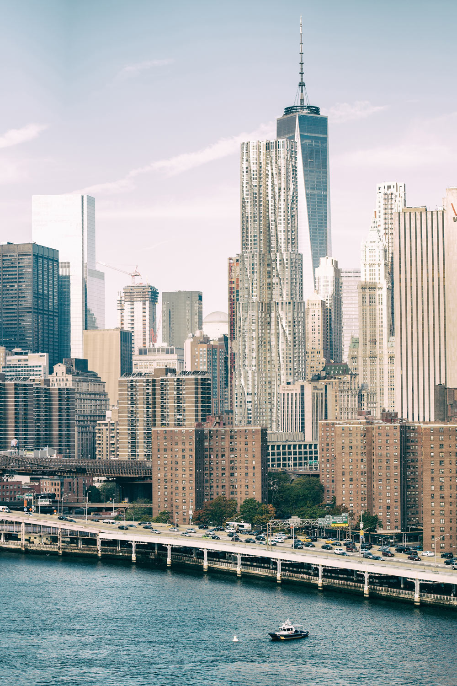

Die Geschichte von New York City beginnt mit den indigenen Lenape, die dort lange vor den Europäern lebten. 1624 gründeten niederländische Siedler die Kolonie New Netherland mit der Stadt New Amsterdam auf Manhattan. 1664 eroberten die Engländer das Gebiet und benannten es in New York um. Im 19. Jahrhundert wuchs die Stadt durch Handel, Industrialisierung und Einwanderung über Ellis Island stark. Heute gilt New York als eine der wichtigsten Wirtschafts-, Kultur- und Finanzmetropolen der Welt.
Die Freiheitsstatue ist eines der bekanntesten Wahrzeichen der New York City und steht auf Liberty Island im Hafen der Stadt. Sie wurde 1886 von Frankreich an die USA verschenkt und symbolisiert Freiheit und Unabhängigkeit. Die Statue ist etwa 93 Meter hoch (inklusive Sockel) und stellt eine Frau mit einer Fackel und einer Tafel dar. Heute ist sie eine der meistbesuchten Sehenswürdigkeiten der Welt.
Der Times Square, gelegen an der Kreuzung von Broadway und Seventh Avenue, gilt als das „Zentrum der Welt“. Bekannt für seine gigantischen LED-Werbeflächen und die hellen Lichter des Theaterbezirks, zieht er jährlich rund 50 Millionen Besucher an. Einst als „Longacre Square“ bekannt, erhielt er seinen heutigen Namen 1904 durch den Umzug der New York Times. Heute ist der Platz eine reine Fußgängerzone und weltberühmt für die „Ball Drop“-Zeremonie an Silvester. Als Epizentrum des Broadways bleibt er der wichtigste Anlaufpunkt für Entertainment und Tourismus in New York City.
Das 1902 fertiggestellte Flatiron Building an der Kreuzung von Broadway, Fifth Avenue und 23rd Street war mit 91 Metern Höhe zwar nie das höchste Gebäude der Stadt, doch war es von Anfang an ein Touristenziel. Es wurde nach Plänen des Architekten Daniel Burnham gebaut. Der eigenwillige dreieckige Grundriss gab dem Gebäude den Namen „Bügeleisen-Gebäude“.
Eines der markantesten Bauwerke der Stadt ist das Chrysler Building in der Lexington Avenue. Das Art-déco-Gebäude besitzt eine glänzende, abgesetzte Turmspitze aus rostfreiem Stahl mit Bögen und Dreiecksfenstern und hat einschließlich der Turmspitze eine Höhe von 319 Metern. Bis zum Dach misst es 282 Meter. Es wurde 1930 vom Architekten William Van Alen im Auftrag des Automobilfabrikanten Walter Percy Chrysler (1875–1940) entworfen. Für ein Jahr war es das höchste Gebäude der Welt, dann wurde das Empire State Building fertiggestellt.
Das Empire State Building ist ein Art-déco-Wolkenkratzer in der Fifth Avenue in Midtown. Es ragt 381 Meter bis zum Dach, einschließlich der Antenne sogar 443 Meter, in den Himmel. Von seiner Fertigstellung 1931 bis 1972 war es das höchste Gebäude der Welt. Seit der Fertigstellung haben etwa 120 Millionen Besucher das Panorama der Stadt von der Besucherplattform im 86. Stock aus besichtigt. Im 102. Stockwerk, der obersten Etage, ist eine weitere Aussichtsplattform. Diese ist jedoch im Inneren des Gebäudes gelegen. Zu besonderen Feiertagen und Anlässen erstrahlt die Turmspitze in verschiedenfarbigem Lichterglanz.
Die Brooklyn Bridge wurde 1883 vollendet und war zur damaligen Zeit die längste Hängebrücke der Welt. Sie überspannt den East River und war die erste Brücke, die Manhattan mit Brooklyn verband. Der Ingenieur John Augustus Roebling (1806–1869) konstruierte dieses Wunder der Technik, erlebte jedoch die Fertigstellung nicht. Sein Sohn vollendete das Werk. Um zu prüfen, ob die Brücke große Gewichte tragen kann, wurde der Zirkus Barnum mit zahlreichen Elefanten hinübergeschickt.
Im Zentrum von Midtown wurde an der Ecke East 42nd Street / Park Avenue zwischen 1903 und 1913 vom Architektenteam Warren & Wetmore aus Minnesota der Grand Central Terminal errichtet. Das Bauwerk verbindet einerseits die Romantik des Reisens und andererseits die Historie eines prächtigen Bahnhofsgebäudes aus der damaligen Zeit. Dank dem Einsatz berühmter Persönlichkeiten New Yorks wie Jacqueline Kennedy Onassis wurde der Bahnhof vor dem Abriss gerettet und zu einem Wahrzeichen der Stadt ernannt. Nachdem der Grand Central Terminal lange nur zur Durchreise genutzt worden war, präsentiert er sich nach umfangreicher Renovierung in den 1990er Jahren heute mit vielen exklusiven Geschäften und Restaurants. Die Kosten für die Renovierung beliefen sich auf über 200 Millionen Dollar.
Die New York Public Library ist eine der führenden Bibliotheken der USA und eine der drei öffentlichen Bibliotheken in New York. Der Entwurf der New York Public Library in der Fifth Avenue, zwischen der 40th und 42nd Street, erfolgte 1897 von den Architekten Carrère and Hastings. 1911 im Beaux-Arts-Stil errichtet, bietet die Bibliothek Platz für mehr als sieben Millionen Bücher 1911 im und 10.000 Zeitschriften. Ihr Status als einer der weltweit führenden Bibliotheken wird belegt durch den Besitz von beispielsweise einer Gutenberg-Bibel, einer Ausgabe der Philosophiae Naturalis Principia Mathematica und der handgeschriebenen Unabhängigkeitserklärung von Thomas Jefferson. Die ersten Bücher stammen von Johann Jakob Astor (1763–1848).
Der Central Park wurde 1853 als Landschaftspark eingerichtet und wird seitdem auch als Volkspark genutzt. Er erstreckt sich heute auf einer Länge von vier Kilometern von der 59th Street bis zur 110th Street und auf 750 Meter Breite zwischen der Fifth und der Eighth Avenue und wird auch die grüne Lunge New Yorks genannt. Mit etwa 340 Hektar nimmt er etwa fünf Prozent der Bodenfläche Manhattans ein. Er ist der größte Park der Stadt und einer der größten der Welt.
Auf einer ehemaligen Hochbahntrasse im Westen von Manhattan entsteht seit 2006 eine Parkanlage. Der erste Abschnitt wurde der Öffentlichkeit am 8. Juni 2009 zugänglich gemacht, der zweite folgte am 7. Juni 2011. Der letzte Teil zwischen 30th und 34th Street befindet sich noch in Planung. Die Stadtverwaltung investierte 50 Millionen US-Dollar in das Projekt; weitere Baukosten werden durch Spenden gedeckt.

